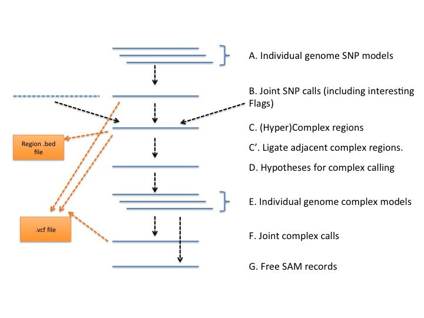
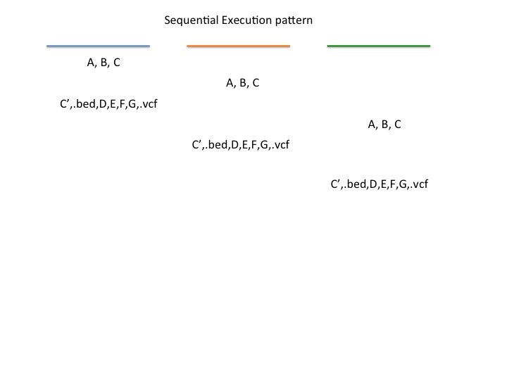
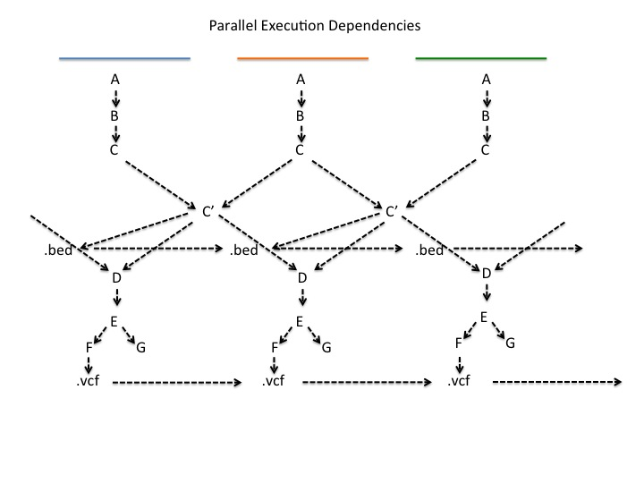

Design for multi-sample caller including complex calling.
The following diagram shows the overall architecture.

A. Individual genome SNP models
This contains one Model per sample and per position within a chunk.
B. Joint SNP calls
Using the Models from above joint calling is done at each point giving a
VarianceCall at each position within a chunk.
C. (Hyper)Complex regions
This is an explicit representation of all the regions within a chunk that should be
complex called or ignored as a hyper-complex region. Because there are a relatively small number of these
a sequential data structure like a list is probably more appropriate than an array based storage (which might be used
for the SNP models).
There are some tricky issues around the process of constructing the (hyper)complex regions
as potentially these regions can span the chunk boundaries.
This will be handled in a two step process. First the (hyper)complex regions within a chunk will be determined.
Then for a chunk where both the preceeding and following chunks have completed the prior step any extensions
of regions across the boundaries will be done. Also beware that it is possible for a single hyper-complex region to extend
across multiple chunks.
One general principle is that in the following steps regions are processed in the chunk that they start in.
It is possible to optimize the checking process above where if a chunk has no regions near a boundary then the neighboring
chunk adjacent to that boundary does not need to be checked. However, this probably only helps with parallel execution.
D. Hypotheses for complex calling
For each complex region the hypotheses can be found by extracting all reads (for all samples) that overlap the region and use them
to build up individual complex calls for each sample and position within the chunk.
E-F. Individual genome complex models and Joint complex calls
Given the hypotheses the same process used for individual SNP models and joint calls can be used for the complex calls.
Output
Output is possible at two points. Once the (hyper)complex regions have been determined it is immediately possible to output
them. (There has been a request to create a bed file with these regions in them).
Once the final joint complex calls have been made then the final output can be done. This requires a merge of
- Joint SNP calls
- (Hyper)complex regions
- Joint complex calls
Care will be necessary to ensure that the output proceeds from left to right across the chunks.
Processing order
The following two diagrams show a sequential processing order and a set of dependencies for potential parallel execution.


Actually, this latter one is outdated, for the latest dependency information, see this PDF